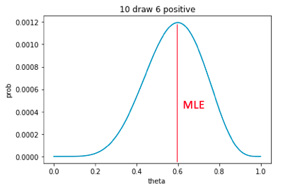
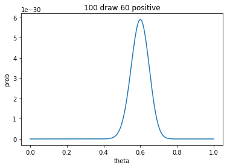

Hi there, this is the restart of my learning BLOG series after almost a year, things around me have changed drastically and I finally got a chance to pursue my dream Ph.D. degree in Computer Science at OSU and my current research interest is in VAST(Visual Analytics Science and Technology). For this exciting moment and the following years, I decided to record and share my growth(frustration) path in a traditional but meaningful way: blog recoding. I will keep posting some topics that I feel interesting and important to remember in an intuitive as well as detailed manner. Hopefully, this can benefit both me and others who are interested in the same topics. Cheers!
Official Start Line ...
Today I'll start by talking about an important and widely applicable technique: Fisher Information and its applications in Model Training and Transfer Learning. Let's get start!
Define a Problem
Consider a typical machine learning problem, in which we are given a training dataset X, and we want to model this dataset from a generative modeling perspective. Under generative perspective, we assume the dataset is generated from a prior distribution p which governed by a hyperparameter θ. The probability of having such a X is calculated as p(X∣θ). For instance, in a n-trial coin flip (binomial model) experiment, if we observe Xobsn=(1,0,1,1,0,0,1,0,1,1) , we can calculate the probability of having such result as :
pθ(X)=θpos(1−θ)neg
When the hyperparameter θ is unknown, the above formula can be directly used as an estimator of the unknown θ, and the best or the most likely θ is the one that generates the highest probability f(X∣θ), this process is known as MLE(Maximum Likelihood Estimate). As shown in Fig. 1, when θ is around 0.6, we are most likely to see the result 10 draws with 6 positive and 4 negative.
 Fig.1 Probability of 10 draw with 6 head under various θ
However, if we look closer at the figure above, we could find that even though 0.6 gives us the best likelihood of such result X, this θ is not robust enough. Since small variations around this value do not change the likelihood significantly, for example 0.5 or 0.7 can also be good candidates for the hyperparameter. This phenomenon could reduce the confidence that we claim the value best θ. In comparison, if we draw this test 100 times and observe 60 positive, the Fig. 1 will become Fig. 2, this time, we can notice that the best estimate of θ is still 0.6, however, this estimate is much more robust compared to the one with 10 draws, as noticed from the Fig.2, small variations around the best estimate will cause dramatic reduction of the probability to have this new result.
 Fig.2 Probability of 100 draw with 60 positive under various θ
By comparing Fig.1 and Fig.2, we can easily find that a more robust estimate of θ in Fig.2 has more mass around the best estimate and also has more curvature in its distribution. Fisher information and fisher information matrix are exactly able to measure this particular information, next we introduce the formal definition of fisher information and its characteristic.
Fisher Information
Before defining fisher information, we first define a fundamental building block of fisher information, named the score function. The score function is defined as a measure of the model's sensitivity wrt. changes in θ:
s(θ)=▽θlogp(x∣θ)
It is the first derivative of the log-likelihood at a specific x point. Then for each data point in our dataset, fisher information measures the overall sensitivity. To achieve that, straightforward thinking is to use covariance, the covariance of score function values at all data point:
F=p(x∣θ)E((s(θ)−s(θ))(s(θ)−s(θ))
This expression of fisher information can be simplified since s(θ)=0, which is the expectation of score function wrt. our model in dataset X is zero.
Thus, the fisher information F can be simplified and represented as p(x∣θ])E((s(θ)−0)(s(θ)−0)). Also considering θ is a vector, the fisher information in this covariance form becomes fisher information matrix:
F=p(x∣θ)E[▽logp(x∣θ)▽logp(x∣θ)T]
In real life calculation, since likelihood function is usually complicated and the expectation calculation is generally intractable, we usually use Empirical Fisher to approximate the real expectation, which is calculated with given datasets rather than considering the whole sample space of x:
F=N1i=1∑N▽logp(x∣θ)▽logp(x∣θ)T
We now see what the Fisher information matrix is and how it is calculated with the score function to measure the overall sensitivity of the model wrt. the parameter θ. But what specific properties or characteristics make it so important in the field of Machine Learning, Deep Learning, and even Transfer Learning?
Relation with Hessian
One important, if not the most, property is that Fisher Information Matrix is the negative expected Hessian of the model's log-likelihood. We are probably already familiar with Hessian, a square matrix of second-order partial derivatives of scalar-valued function(e.g., Loss function/Likelihood function).
Quick catch up with Hessian's application:
1.Hessian Matrix is widely used in Convexity proof and convex optimization (based on the determines of the matrix)
2. Hessian Matrix is used to control the updating amount in second-order optimization:
Consider a function f(θ)'s second order Talyor expansion:
f(θ+△θ)=f(θ)+gT△θ+21(△θ)TH(△θ)
After calculate f's derivative wrt. △θ and make it zero, we could get that △θ=−H−1g
and xt+1=xt−H−1g , where g=▽f is the Jacobian (gradient) of f.
compare this with the traiditonal gradient descend updating rule: xt+1=xt−αg where
α is the updating amount, we know Hessian Matrix is control the updating amount.
Next we show that why Fisher Information Matrix is the negative expectation of Hessian:
Based on the proof above, we can see that Fisher Information is indeed a measure of the curvature of the log-likelihood. And with this relationship to the Hessian, an immediate application of the Fisher Information Matrix replaces Hessian in second-order optimation. Specifically, ADAM, a stochastic optimization method that is widely used nowadays in various learning tasks, computes the first and second momentum to perform parameters update. The second momentum is just approximating the Fisher Information Matrix by only consider the diagonal elements.
Sum it Up!
In this post, we briefly introduce what Fisher Information is and what it is designed for, and one of its most important properties. In this next post, I'll continue the discussion by discussing the relationship between Fisher Information and KL divergence and how this can be used in Natural Gradient Descent.
Preview on next post
Consider a typical Machine Learning problem, in which we try to learn the best parameter θ to minimize the model's Loss Function.
θ=θargminL(X,θ)
We typically apply gradient descent (GD) or SGD to update parameters iteratively, and at each step, we actually want to find the best move d such that:
d=d,∣∣d∣∣<ϵargminL(X,θ+d)
That is, we find a small step d within the ϵ-neighborhood of the current θ. Notice that we express this constraint in Euclidean distance to limit the amount of update at each step. This is helpful in facilitating the finding of the local minimum. However, since we only constraint that the new θ∗ that not too far from the old one, a problem could appear: small euclidean distance in parameter could lead to large variation in the model's distribution, say p(x∣θ). As shown in the figure below, consider a Gaussian distribution parameterized by its mean and variance(left 2, right 0.5), in both figures, even though the distance(measured in Euclidean space) of two distributions are the same, the real difference between these two distributions is significant. As we can see there is much sharing space between two distributions in the left figure but few on the right. This can also be measured with KL-divergence.
In many Machine Learning tasks, we could easily have a Catastrophic Forgetting problem, which says that a model trained on one dataset and further moves to train with another dataset could easily lose the knowledge and predictive ability of the first dataset. This is because the parameter update during the training of the second dataset has changed the model's distribution dramatically and makes it completely forgot the previous distribution. To solve this problem, one solution is to limit the update of the parameter at each time not in euclidean space. Still, in distribution space, which means each time, the update d we make is constrained not by ∣∣d∣∣<ϵ, but KL(p(x∣θ)∣∣p(x∣θ+d))<ϵ, this will make sure the distribution will not change too much and is better for many transfer learning tasks.
Next time, we will show the relationship between Fisher Information and KL-divergence and how Fisher can simplify this training process!

{kind=link}
{kind=link}
{kind=link}